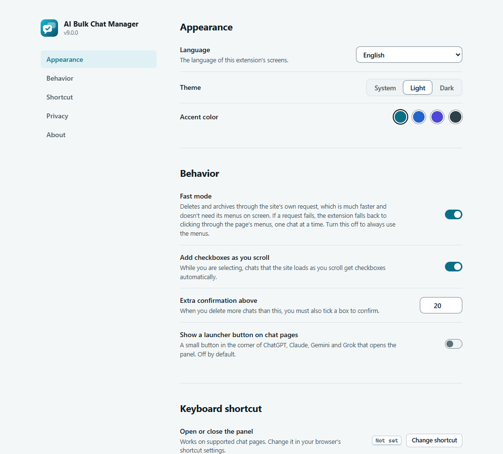
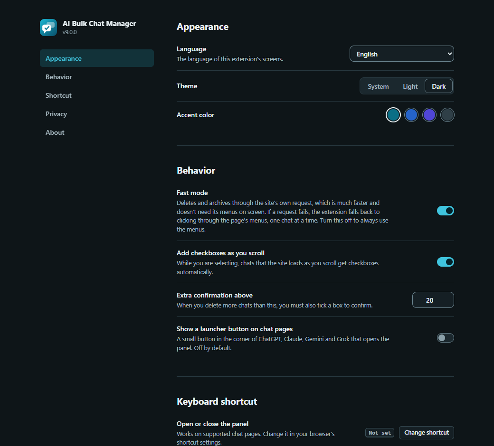

Settings live on the Options page. They save the moment you change them and apply to the popup, the panel and every open chat tab.
Open the Options page#
- Click the toolbar icon, then the sliders button (Settings) in the popup header.
- Or open the panel’s Panel settings box and click All settings.
- Or use the Options link of the extension on your browser’s extensions page.


Appearance#
| Setting | Choices | Default |
|---|---|---|
| Language | Automatic (browser language) or one of 11 languages. The language of this extension’s screens. See Languages and appearance. | Automatic |
| Theme | System, Light, Dark | System |
| Accent color | Teal, Blue, Indigo, Graphite | Teal |
Behavior#
| Setting | What it does | Default |
|---|---|---|
| Fast mode | Deletes and archives through the site’s own request, which is much faster and does not need its menus on screen. If a request fails, the extension falls back to clicking through the page’s menus, one chat at a time. Turn it off to always use the menus. Has no effect on Gemini, which always uses its menus. | On |
| Add checkboxes as you scroll | While you are selecting, chats that the site loads as you scroll get checkboxes automatically. | On |
| Extra confirmation above | When you delete more chats than this number, you must also tick a box in the confirmation dialog. Accepts 1 to 500. A number outside that range is brought back into it. | 20 |
| Show a launcher button on chat pages | A small button in the corner of ChatGPT, Claude, Gemini and Grok that opens the panel. | Off |
The two switches Fast mode and Add checkboxes as you scroll are also in the popup and in the panel’s Panel settings box. They are the same settings.
The launcher button
With the launcher on, a small round button with the extension’s logo sits in the corner of the supported chat pages. Click it to start selecting without using the toolbar. It shows when the panel is closed and hides while the panel is open. Its tooltip reads Open AI Bulk Chat Manager.
Keyboard shortcut#
Shows the current key for Open or close the panel, or Not set. The button Change shortcut opens your browser’s own shortcut settings page. If your browser blocks that, the extension tells you where to go. The default is Alt+Shift+B. See Keyboard and shortcuts.
Privacy#
This section lists the main privacy facts and has three buttons.
- Privacy policy
- Opens the policy.
- Copy diagnostics
- Copies a short text for bug reports and shows Diagnostics copied. Paste them into a bug report. It holds the extension version, your browser name and its user-agent text, the interface language, your settings, and a note that it contains no chat titles or links. See Reporting a problem.
- Reset settings
- Asks Reset all settings to their defaults? After you confirm, every setting above returns to its default, including where you dragged the panel, and you see Settings were reset. It does not touch your chats or the monthly support reminder timer.
About#
The About section has a short description, the independence notice and these buttons: Guide (this site), Source (GitHub), Report a problem (the issue forms), Rate, Support and Website. Website and the byline under the buttons link to the developer’s website, www.enaloo.com. All of them open in a new tab only when you click them.
Remembered automatically#
Two more things are remembered without a setting you can see:
- Where you last dragged the panel.
- The timer for the monthly support note, and whether you chose Don’t show again.
Settings are stored in your browser on this device, not in browser sync. They do not follow you to another computer. See Privacy and permissions.
Edit this page on GitHub ↗ · Last updated 2026-10-08